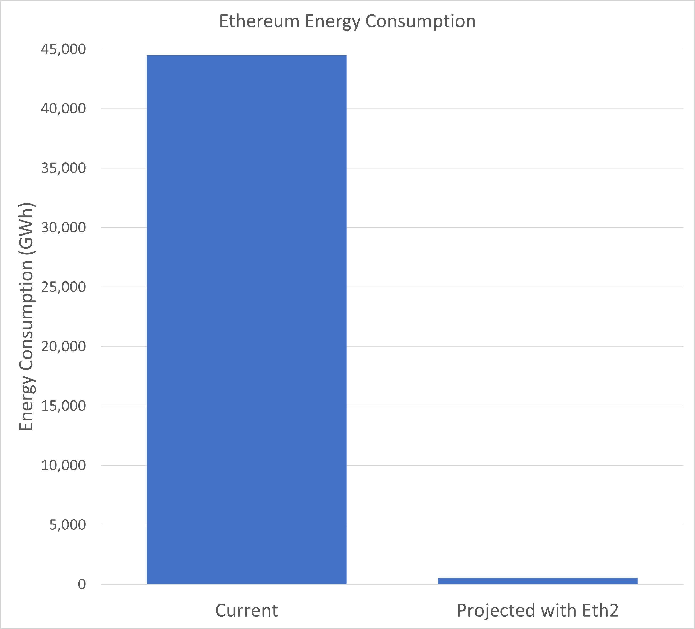

Woah, there. This page was designed for desktop, you probably don't want to view it on your phone. Continue at your own risk.
You've probably heard about NFTs lately, but what are they?
If you already know how cryptocurrency works, NFTs aren't too hard to understand, so read on to see where they fit in!
What are NFTs?
- NFTs are Non-Fungible Tokens.
Non-fungible items are unique; they can't be interchanged with other items. In the case of NFTs, they contain unique data.
- Common exmaples of NFT-izable content:
- Digital Artwork
- An Essay
- An Event Ticket
- An NFT allows these examples to be tokenized, giving each an owner through the Ethereum blockchain.
How do NFTs work?
- NFTs can be created for anything stored digitally that can hold value. This shows that the digital asset has ownership that can be bought and sold like physical art.
- NFTs are traded using Ethereum's blockchain cryptocurrency infrastructure.
- Creators hold the ownership rights and can claim resale benefits directly. The process for creating an NFT starts by creating a new block then validating information and finally, translating the information into the blockchain.
How are NFTs bought and sold?
- NFTs are bought and sold on trading websites such as Ethereum. When you buy an NFT from ethereum, you can easily sell it on different programs because all Ethereum products can easily understand each other.
- Just like with cryptocurency, NFT transactions are public, which can be used to verify the NFT's ownership history.
- You can sell an NFT on a program or through peer-to-peer transactions which takes out the need for platforms which take large cuts of the transaction as compensation.
How does ownership work?
- NFT creators retain ownership rights over their work, and can collect royalties if a future owner makes a profit on their work.
- Like a painting, NFTs can only have one owner at a time, and this ownership can be tracked.
- NFT owners get a private key proving they are the current owner.
- Fractional NFTs are experimental right now, but they allow creators to create shares for their work similar to shares in the stock market. This will allow many people to share ownership of the same piece of work.

What are the environmental impacts of NFTs?
- Because NFTs are created using Ethereum, they currently create a large carbon footprint. However, NFTs are not more energy intensive than other Ethereum uses.
- Overall, the estimated yearly energy consumption of Ethereum overall is 44.49TWh (44,490,000,000kWh). This is a lot but improvements are being developed.
- Most of the energy usage is in order to keep Ethereum (and by extension NFTs) decentralized and secure. These improvements, known as Eth2, change the process to do this.
- Current estimates show that the yearly energy usage of Eth2 will be 5.256GWh (5,256,000kWh). This is more than a 99% decrease in energy usage.
What are the benefits of NFTs?
- NFTs give digital artists a way to monetize their work. They allow creators to sell their work and directly profit from it.
- For NFT owners, there is the benefit that they can prove ownership. While there can be many copies of the content of the NFT, the value comes from having ownership.
Can other people use my NFT?
- Yes.
- They just don't "own" it.
Content adapted from Ethereum’s NFT info page.
Ethereum. (2021, November 16). Non-fungible tokens (NFT). Ethereum. https://ethereum.org/en/nft/